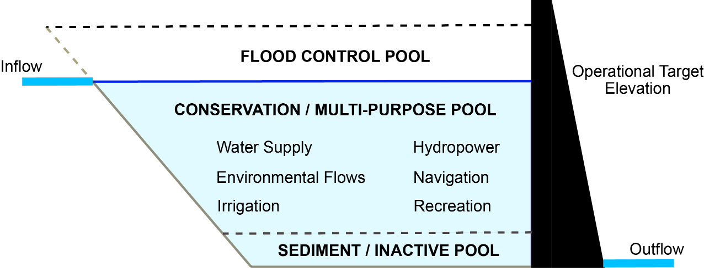

Water Data Boot Camp: Spring 2018
Unit 1: Task 2
Evaluating 100-year flood frequency
Our team hydrologist suggested that one method for evaluating the impacts of dam construction is to monitor changes in flood return intervals. Falls Lake is a flood control reservoir, so it should decrease the amount of downstream flooding.

*Figure: Reservoirs should moderate downstream flows. There is a flood control pool to hold flood waters that can be released slowly over time. There is also a conservation pool that holds water that can be released downstream during drier conditions to meet minimum streamflow requirements.*
Flood insurance policy is built around the concept of the 100-year flood event. The housing industry has been working to explain what that risk actually means to homeowners with 30 year mortgages. Understanding the flood risk relative to mortage's is helpful for insurance companies to know. Has Falls Lake decreased the flood risk for downstream homes?

Reservoirs decrease the likelihood of downstream flooding, but that often means development occurs in areas that would have been frequently flooded prior to the reservoir. We’ve seen examples of this just his year with Hurricane Harvey.
Framing & Executing the analysis
We will use Leopold’s (1994) flood frequency curve and the Weibull equation to calculate the recurrence interval. Here the return interval is computed as where is the number of years of data and is the rank of the year from largest to smallest (see this link for more info).
* NOTE: The accuracy of a return interval is highly impacted by the length of the time series.
So, for us to do this analysis, we need to first compute maximum annual discharge, i.e., extract the largest discharge observed from each water year. Then we sort and rank our data on max annual discharge and then compute a regression line from which we can determine the discharge of a 100 and 500 year flood.
• Compute maximum annual streamflow using pivot tables
Excel's pivot tables are one of it's more powerful features, allowing you to easily extract and cross tabulate various summaries from your data. We'll use to sift through discharge records on a per-year basis and identify the largest one.
Highlight your entire EDA table, headers and all.
From the Insert menu, select Pivot Table, choosing to place the report in a
New Worksheet.Rename this worksheet "Flood".
In the new worksheet created, click on the Pivot Table if the
Pivot Table Fieldsdialog is not shown.In the Pivot Table Fields dialog:
- Drag the
Water yearfield into theRowssection - Drag the
Mean discharge (cms)field into theValuessection - Using the dropdown menu next to the
the Mean discharge (cms)item now in theValuessection, change theValue Fields Settingsto summarize the field by theMaxvalue.
- Drag the
• Rank & sort the pivot table data; compute return intervals
We now have the data we want. Next we'll compute rankings and then sort the data. However, to do this we need to copy the data from the dynamic Pivot Table.
Copy contents of your pivot table
Paste the values of the contents
right click+s+v.Delete the last row in the pasted values (the grand total).
Sort the data from largest to smallest:
- Select both columns of data
- From the Home menu, select Sort & Filter->Custom Sort
- Sort data by discharge values from largest to smallest.
Compute rankings in a new column named
rankType in a few numbers, e.g., 1, 2, 3.
Select these numbers and double click the lower right hand corner of the selected range.
Alternatively, you can use the
RANK.EQfunction*Note: How do these methods differ for those years with the same maximum values (ties)?
• Compute Return Interval (RI) and Annual Exceedance Probability (Pe)
Recall that the return interval is computed from the sorted and ranked time series data. Now that we have our data sorted and ranked, we compute RI from the number of years of data we have (plus 1), divided by the ranking of a given year's discharge.
Calculate return intervals in a new column named
RI- Determine how many years of data you have (e.g. count of year rows or max of rank).
- Compute where
nis the number of years of data andmis the rank.
Calculate the Annual Exceedance Probability (just the inverse of RI) in a new column named
PeCompute the the probability of the 100, 500, and 100 year flood occurring over the next 30 years as a binomial distribution: where
Tis the return period (e.g. 100 years) andnis the number of years of interest (30 years in our case).- Add three label cells: 100, 500, 1000 in a new location in your worksheet
- Next to them add the formula
=1-(1-(1/XX))^30where xx is the reference to your label cell.
• Plot the data and compute a regression equation
Create a scatterplot of max discharge (y-axis) vs. recurrence interval (x-axis)
Note: Excel will default to setting the left most column in your table to the X-axis and the other as the Y-axis, meaning your scatterplot will default to setting the X-axis to Max Discharge and the Y-axis to Recurrence Interval. You'll have to manually switch this using the
Select Datatool.- In the Select Data Source dialog, Edit the
RIcategory and swap theSeries X valuesandSeries Y values.
- In the Select Data Source dialog, Edit the
Place the x-axis on a log scale and add minor tick marks
Add a regression line to your plot
- Select the points in your plot; right-click and select Add Trendline.
- Try out different trendlines to see which has the best fit. In our case, logarithmic.
- Check the box to display the equation on the chart and r2 values.
• Apply the regression to compute 100, 500, and 1000-year flood discharges
Using the regression equation you just calculated and added to your chart, estimate the discharge for the 100, 500, and 1000 year events, i.e., compute
yforx= 100, 500, and 1000, respectively, somewhere in your Excel worksheet. These are the estimated discharge at 100, 500, and 1000 year flood events.Add those estimated discharge values to your chart.
- Select Data > Add > RI Year goes to
X Values,Y Valuesare the values computed from the regression.
- Select Data > Add > RI Year goes to
♦ EXERCISE: Calculate the return interval from the pre-1980 data
Repeat the above analysis only using data prior to 1980 to calculate the return interval.
- How many fewer years of data are used?
Plot the new dataset on top of the original plot.
Design>Select Data>Add- Add the estimated 100 and 500 year points for each plot based on the regression.
How big is the difference between the 100 and 500 year estimates?
- Percent is calculated relative to the smaller record (my choice)
Calculate the discharge for different return periods and exceedance probabilities
Plot annual discharge and calculate the number of times the 100 year flood was surpassed for both the POR and prior to 1980
- Plot the estimates on the same chart. How much do they differ? Are you surprised by the results?
Look at the first plot you did of streamflow on the EDA spreadsheet to look at the distribution of peak events. These events are all hurricanes. How does it change your understanding of why Falls Lake doesn’t seem to impact flood frequency?
What happens to your answer if you remove those three points?